Sobre o Ghibli
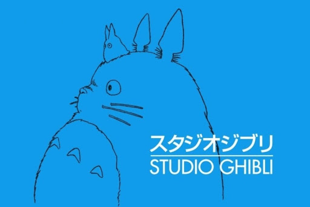Studio Ghibli Inc. é um estudio de animação japonesa, foi fundado em 1985 por Hayao Miyazaki, Isao Takahata, Toshio Suzuki e Yasuyoshi Tokuma e atualmente e sediado em koganei, Tóquio. O estudio ja produzio 21 longas de animação, sendo o primeiro O Castelo no Céu (1986) e o ultimo Aya e a Bruxa(2020). Álem de produzirem 21 curtas de animação e uma seria animada. Mesmo que o primeiro filme dos estudios seja O Castelo no Céu ele foi fundado logo após o sucesso do filme Nausicaä do Vale do Vento que foi feito pela mesma equipe porem não eram conhecidos como Studio Ghibli Inc. Hayao Miyazaki, Isao Takahata e Toshio Suzuki uniram-se para fazer filmes animados do jeito que quisessem fazer. Assim, o primeiro filme do Studio Ghibli, que estreou em 1986, foi O Castelo no Céu levando 775 mil pessoas aos cinemas, 2 anos depois, o Studio Ghibli surpreendeu mais uma vez lançando dois filmes ao mesmo tempo um desafio extremamente dificil de se cumprir sem comprometer a qualidade porém ambas as obras se tornaram obras primas consideradas por muitos os melhores filmes do Studio Ghibli até hoje. Depois de anos os estudios tiveram altas e baixas, com mortes e demissões, porém atualmente e um dos maiores estúdios de animações e tem fás em todo globo.
Hoje esta trabalhando em um novo filme chamado "Como Vocês Vivem?" quem conta a historia de um jovem garoto que se muda com o tio após a morte do pai e passa por uma mudança espiritual Suzuki diz que a pandemia de coronavírus, que interrompeu a maioria das produções de cinema e televisão do mundo, não afetou o progresso de Ghibli aqui. Mas ainda estamos a alguns anos de ver os resultados finais.
Obras da Ghibli
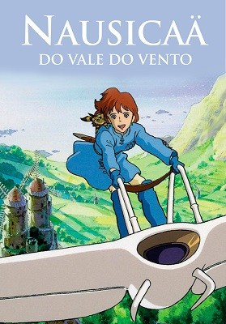
Nausicaä do Vale do Vento (1984) |
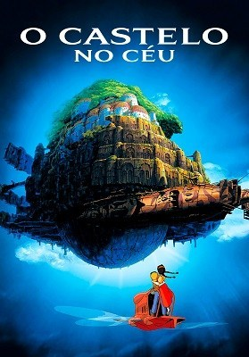
O Castelo no Céu (1986) |
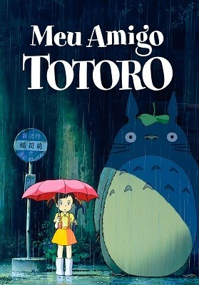
Meu Amigo Totoro (1988) |
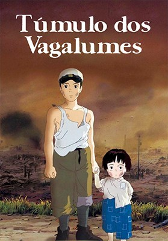
Túmulo dos Vagalumes (1988) |
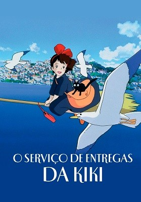
O Serviço de Entregas da Kiki (1989) |
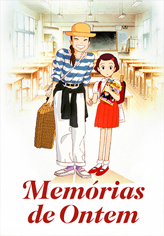
Memórias de Ontem (1991) |
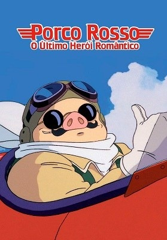
Porco Rosso: O Último Herói Romântico (1992) |
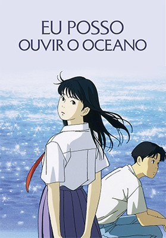
Eu Posso Ouvir o Oceano (1993) |
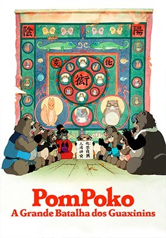
PomPoko: A Grande Batalha dos Guaxinins (1994) |
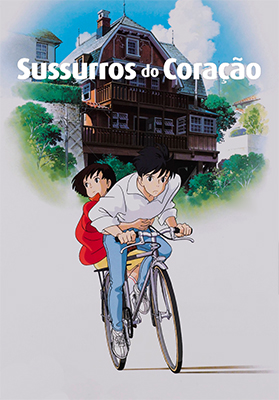
Sussurros do Coração(1995) |
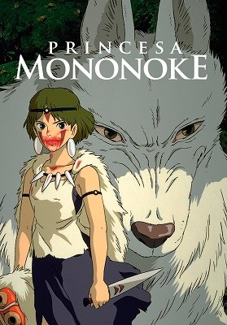
Princesa Mononoke (1997) |
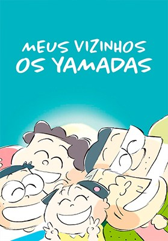
Meus Vizinhos os Yamadas (1999) |

A Viagem de Chihiro (2001) |
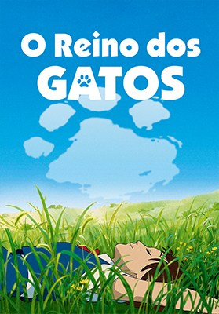
O Reino dos Gatos (2002) |
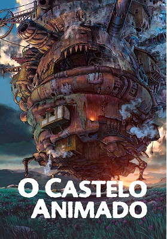
O Castelo Animado (2004) |
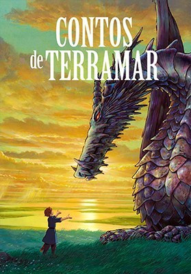
Contos de Terramar (2006) |
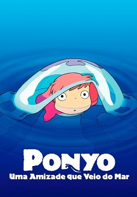
Ponyo: Uma Amizade Que Veio do Mar (2008) |
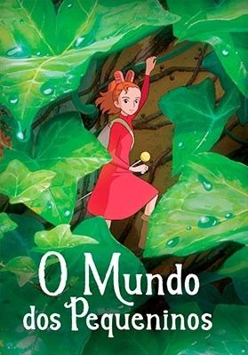
O Mundo dos Pequeninos (2010) |
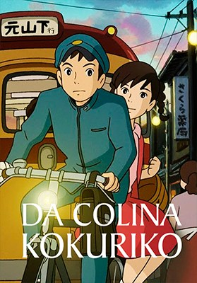
Da Colina Kokuriko (2011) |
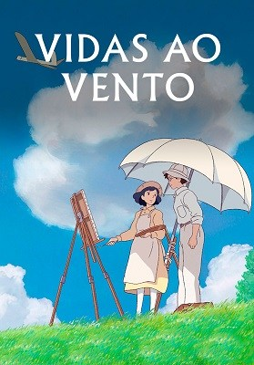
Vidas ao Vento(2013) |
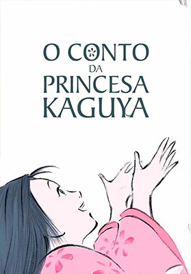
O Conto da Princesa Kaguya (2013) |
As Memórias de Marnie (2014) |
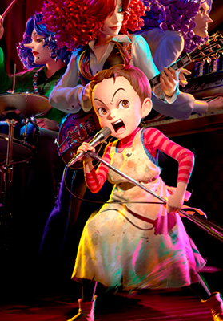
Aya e a Bruxa (2020) |
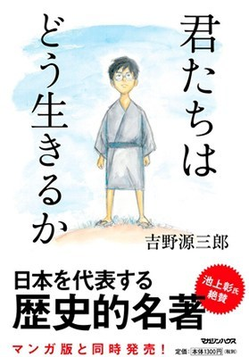
Como Vocês Vivem? (em produção) |